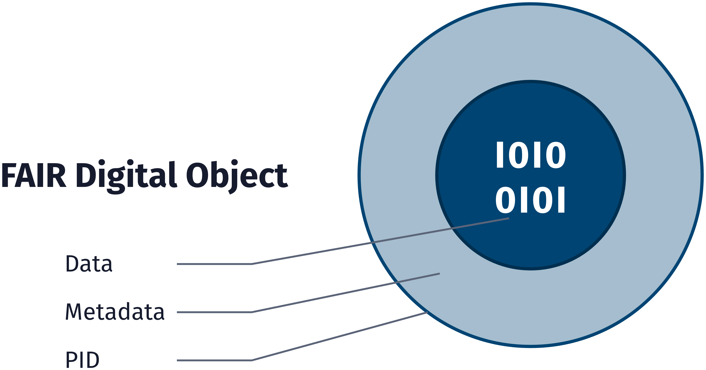
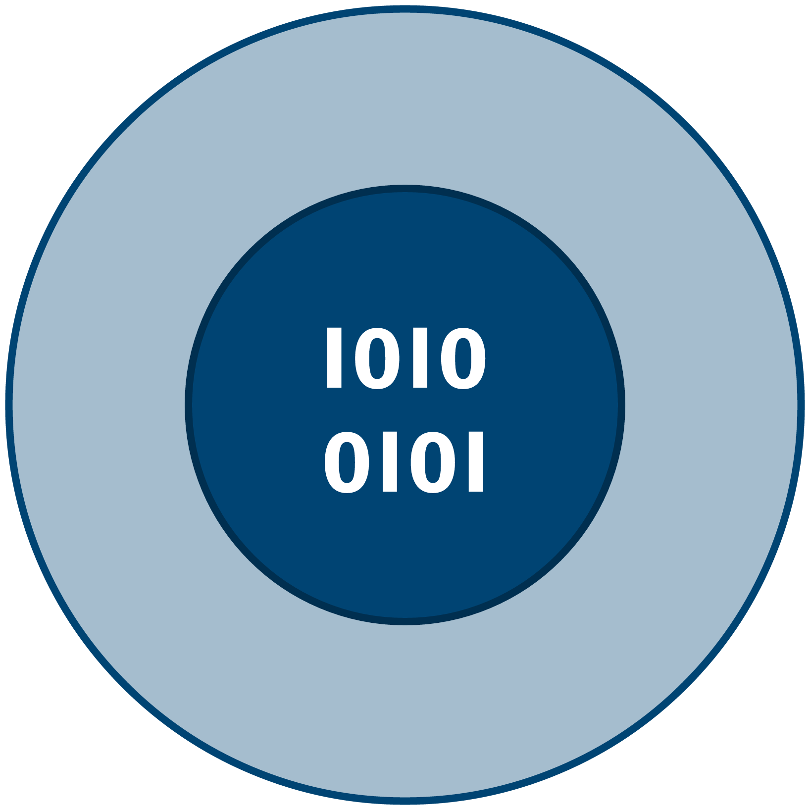
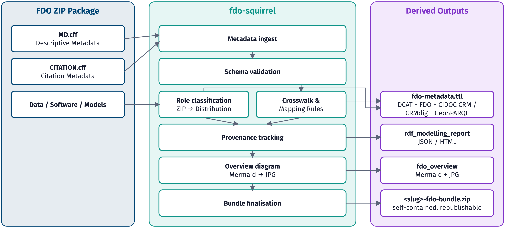
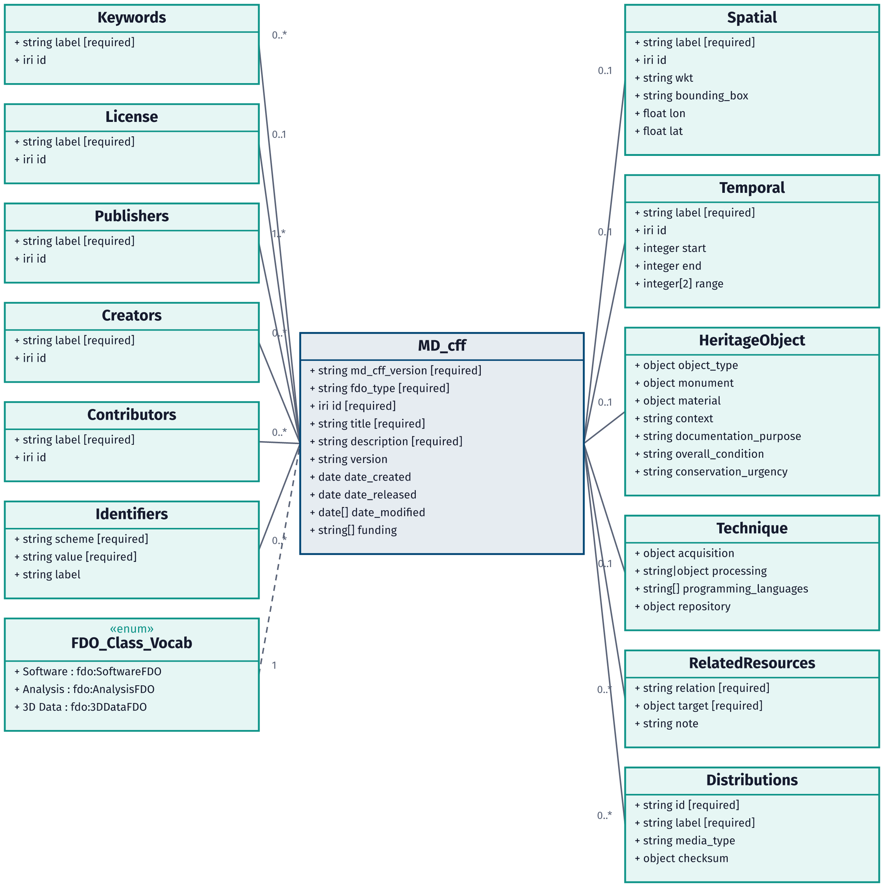
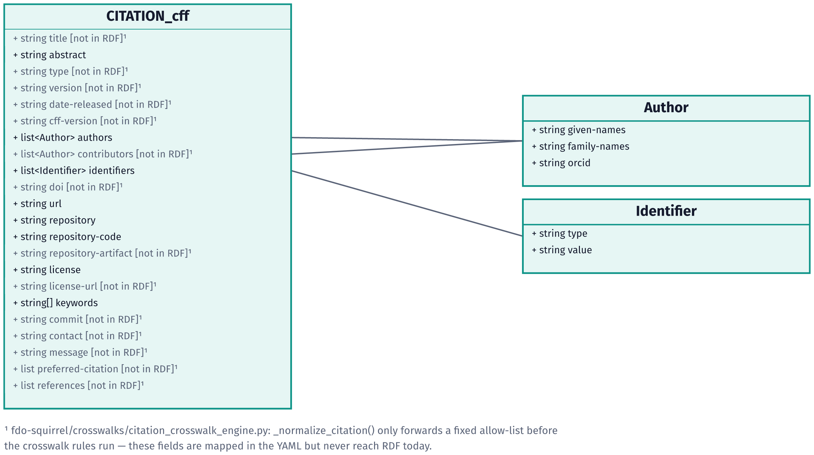

Schemas, architecture and meta graphic
The MD.cff and CITATION.cff schemas, the FDO-Squirrel architecture and the FDO meta graphic.

SC.1The FAIR Digital Object as data, metadata and persistent identifier, in the FDOx palette.
FDOx-squirrel, fdox-visuals (Florian Thiery, LEIZA). Code: MIT licence.



SC.2The FDO sphere on its own, for use in slides and posters.
FDOx-squirrel, fdox-visuals (Florian Thiery, LEIZA). Code: MIT licence.



SC.3How fdo-squirrel turns an FDO ZIP package into RDF, including validation, the overview image and bundle finalisation.
FDOx-squirrel, fdox-visuals (Florian Thiery, LEIZA). Code: MIT licence. Source: fdo-squirrel, main.py.



SC.4Class diagram of the MD.cff metadata schema.
FDOx-squirrel, fdox-visuals (Florian Thiery, LEIZA). Code: MIT licence. Source: fdo-squirrel-spec, data/raw/MD.cff-schema.yaml.



SC.5The CITATION.cff fields fdo-squirrel reads: those its crosswalk forwards to RDF and those it maps but drops.
FDOx-squirrel, fdox-visuals (Florian Thiery, LEIZA). Code: MIT licence. Source: fdo-squirrel crosswalk.